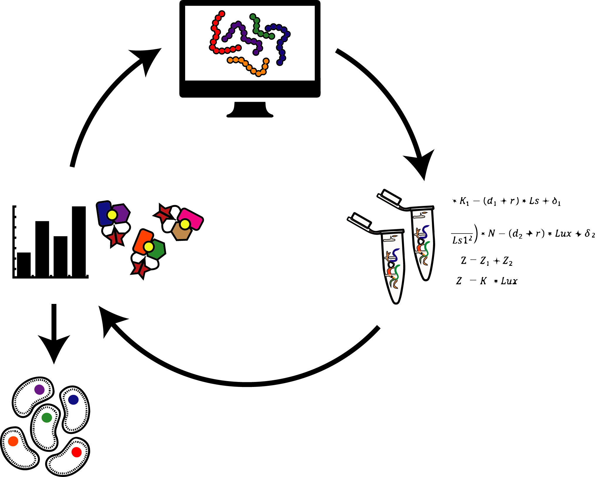
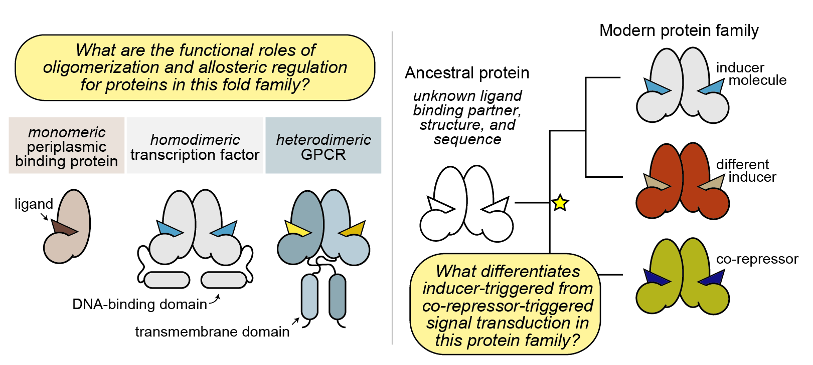
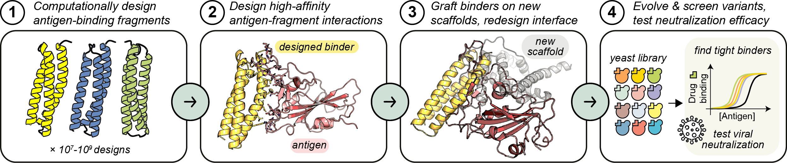
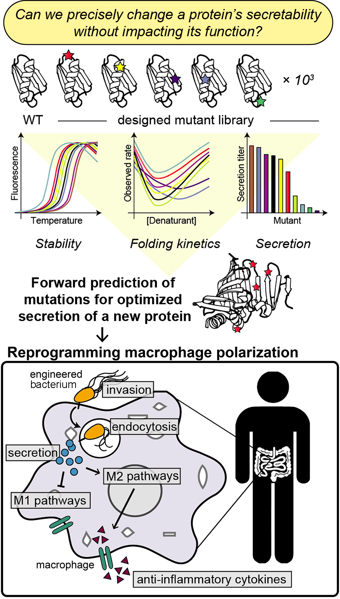

Research
Contents
Research#
Protein engineering for understanding and rewiring living systems: we rebuild it until we understand it.
The diversity of natural proteins shapes cell- and tissue-level structure and behavior, and advances in protein engineering have enabled the de novo design of artificial, super-stable proteins. But real proteins have evolved to depend on biomolecular interactions and conformational flexibility in order to balance stability with function. A key challenge in protein engineering is overcoming our limited mechanistic understanding of how proteins’ conformational ensembles are poised to perform non-equilibrium processes, which enable their functions.
{kind=link}
The Glasgow Lab combines computational design approaches with high-throughput experimental biophysics to understand the molecular underpinnings of protein behavior. Design principles for building signal-responsive, conformation-switching proteins can guide efforts to control the behavior and development of living systems and treat diseases without disrupting healthy cells.
Our long-term goal is to engineer multi-functional proteins and therapeutics that respond to binding molecules and correct localization via programmed conformational changes. Our work is driven by public need, and we aim to grow our knowledge of biomolecular behavior and open new paths for solving problems in medicine and energy.
Protein allostery#
Protein allostery is broadly defined as a perturbation at one site in a protein that causes a functional change at another site. Cell signaling depends on allostery, and a fundamental understanding of this phenomenon is key to decoding biological regulation in normal and diseased systems. The main limitation in uncovering allosteric mechanisms in proteins is that established techniques usually do not provide enough information about protein structure and dynamics to detail all of changes caused by perturbations.
Mapping allosteric signal transduction#
Despite the giant universe of possible protein folds, millions of years of evolution have optimized for only a few thousand that occur naturally and are organized in families. What’s special about these groups of protein structures that allows them to be reused over and over for diverse functions – and what about all the folds that are possible, but weren’t evolved?
{kind=link}
We are interested in understanding:
how allostery evolves in organisms;
how allosteric conformational changes that drive function are encoded in protein families;
how conserved intramolecular contacts in protein families enable common conformational changes in response to allosteric perturbations.
Towards answering these questions, we are building a high-throughput platform for precisely tuning thermodynamically coupled residue interactions in protein families towards a generalizable model for allostery in evolutionarily related proteins.
Engineering new allostery#

The major challenge in rewiring an allosteric protein for a new structure or function is that we don’t know how each region in the protein contributes to its stability, interactions, and dynamics. So, we don’t know how (or where!) we should engineer the protein to change its behavior in a predictable way. Sometimes we can get around this problem using an evolution approach: by making thousands to millions of random mutations and screening for the mutants that perform the desired function. But this usually doesn’t tell us why the solution works, and we can’t use this strategy for forward-engineering a totally new function.
In our group, we are interested in strategies for precisely designing new allosteric proteins that perform completely artificial functions using biophysical data and computational design approaches.
Protein interactions#
Effective protein therapeutics rely on specific and well-regulated biomolecular interactions, but designing such interactions from scratch is difficult. In the case of antiviral therapeutics, the challenge is intensified by the fact that viruses can easily evolve escape mutations to evade drug-binding. The COVID-19 pandemic continues to demonstrate that for this and other reasons, pharmaceutical companies have few incentives for in-house antiviral drug development pipelines.
{kind=link}
We combine the fundamental question of how to build new protein interactions with the critical need to develop robust new platforms for rapid response to viral infections, towards versatile and generalizable therapeutic scaffolds.
Protein transport#
{kind=link}
One of the most exciting and essential dynamic processes in living systems is cross-membrane transport. Natural proteins move among cell compartments and between cells in defined, beautifully coordinated ways to enable biological signaling. However, engineering proteins for predictable inter-cellular transport requires knowledge of the biophysical constraints that govern these processes, which can involve cargo protein folding and unfolding.
We are working on uncovering the biophysical requirements for protein export through an ancient, highly selective bacterial secretion system, towards repurposing this system for intracellular protein delivery in mammalian cells. Our approach combines computational and experimental methods to systematically characterize the parameters that influence protein secretion. We can use this information to forward-engineer probiotics that allow human cells to self-regulate inflammation in the gut.